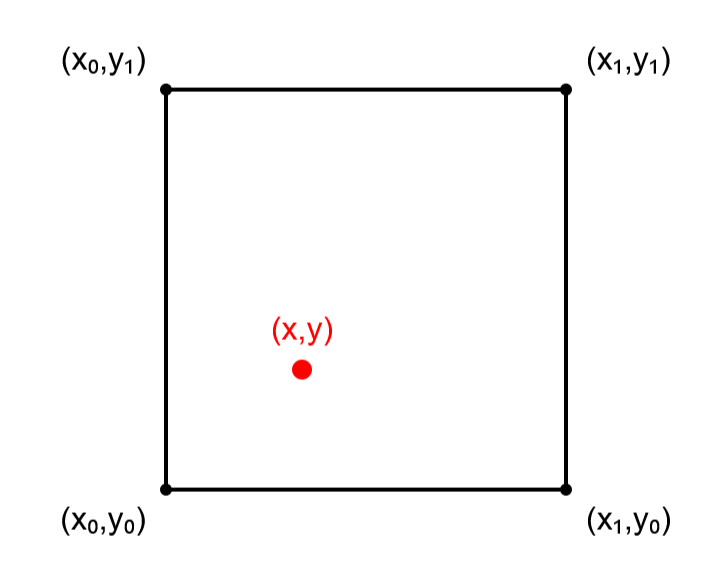
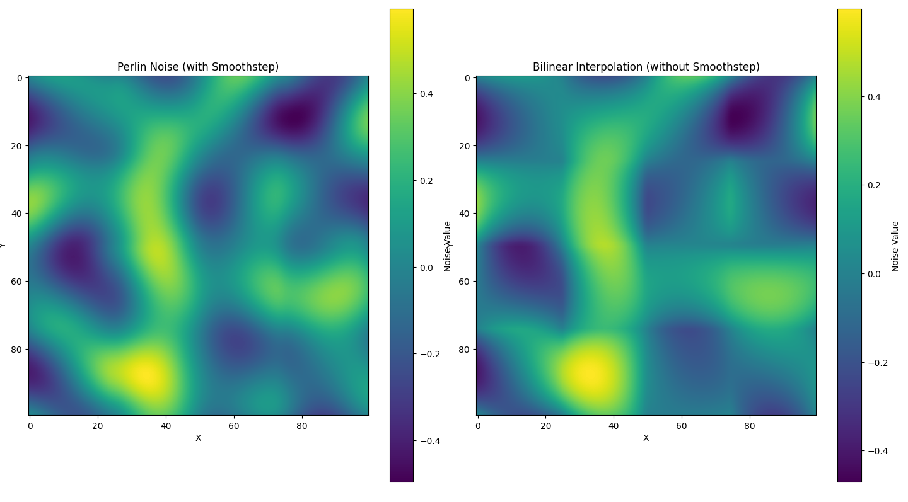

Perlin noise（柏林噪声）是一种乱中有序的噪声，可以用来生成随机地形。本文主要关注其原理，不关注其应用。
作为"乱中有序"的噪声，Perlin noise 希望构建一个 $\mathbb R^n \rightarrow \mathbb R$ 的函数 $f$，使得 $f$ 在看起来随机的同时还保持良好的性质（比如可微）。以2D来说，就是构建一个**可微的**看起来随机的函数 $f(x, y)$.
为了保证可微，Perlin noise 选择**从梯度出发**构建函数，而非从值出发构建函数。具体来说，我们把空间划分成若干个超立方体（对2D来说，就是正方形），再给超立方体的每个顶点随机赋值一个单位向量作为梯度，并根据这些梯度来对超立方体内的每个点进行插值来算出其值。
算法实现
接下来以 2D 为例，更具体地讨论其实现步骤。
1. 划分空间，得到若干个正方形。这里把所有整数点作为顶点。
height = 5
width = 52. 给每个顶点赋值一个单位向量作为梯度。
# 这里为了简化代码, 不做归一化
gradients = np.random.standard_normal((2, height, width))3. 对空间内的每个点$(x,y)$，找到包含它的正方形的四个顶点 $(x_0,y_0),(x_0,y_1),(x_1,y_1),(x_1,y_0)$
x0 = np.floor(x).astype(int)
y0 = np.floor(y).astype(int)
x1 = x0 + 1
y1 = y0 + 1
4. 计算每个顶点对它的"贡献值"，即梯度乘上相对位置向量。以 $(x_0,y_0)$ 为例，假设其梯度为 $g_{00}$，则贡献值为 $\text{commit}_{00}=g_{00}[0]*(x-x_0)+g_{00}[1]*(y-y_0)$.
height, width = gradients.shape[1:]
g00 = gradients[:, y0, x0]
g01 = gradients[:, y1, x0]
g10 = gradients[:, y0, x1]
g11 = gradients[:, y1, x1]
commit00 = g00[0] * (x - x0) + g00[1] * (y - y0)
commit01 = g01[0] * (x - x0) + g01[1] * (y - y1)
commit10 = g10[0] * (x - x1) + g10[1] * (y - y0)
commit11 = g11[0] * (x - x1) + g11[1] * (y - y1)5. 最后，根据四个贡献值对 $(x,y)$ 点进行插值。要注意的是，我们不采用线性插值，而是使用经过平滑步进函数修改的线性插值。这听起来很高级，但实际上只是把线性插值的"距离 $d$"换成了"经过平滑函数的距离 $\text{fade}(d)$"。
dx = x - x0
dy = y - y0
fade_dx = fade(dx)
fade_dy = fade(dy)
return (commit00 * (1 - fade_dx) * (1 - fade_dy) +
commit10 * fade_dx * (1 - fade_dy) +
commit01 * (1 - fade_dx) * fade_dy +
commit11 * fade_dx * fade_dy)读者或许还会看到形如下面这样的代码，其实两种方法是等价的，都是双线性插值，不过下面这种效率略微高一点。在本文结尾，我们给出了这两种等价的实现。
# 在x方向进行插值
lerp_x0 = lerp(commit00, commit10, fade_dx)
lerp_x1 = lerp(commit01, commit11, fade_dx)
# 在y方向进行插值
return lerp(lerp_x0, lerp_x1, fade_dy)平滑步进函数的选择
为了方便讨论，我们以 1D为例。
之前已经提到，作为"乱中有序"的噪声，我们希望构建一个**可微的**看起来随机的函数。对1D来说，就是希望 $f(x)$ 可微。
如果我们把所有整数点作为顶点，那么在每个形如 $[n, n+1)$ 的区间内，有
$$f(x) = (1 - \text{fade}(x - n))((x - n)g_n) + \text{fade}(x - n)((x - n - 1)g_{n+1})$$其中 $g_n$ 和 $g_{n+1}$ 是在"给每个顶点赋值一个单位向量作为梯度"时确定的实数。
显然 $f(x)$ 在 $(n, n+1)$ 上是可微的。为了保证 $f(x)$ 在我们需要的范围上可微，只要 $f(n^-)=f(n^+)$ 且 $f'(n^-)=f'(n^+)$ 即可。
如果我们假设 $\text{fade}(d)$ 是一个三次函数，那么解这四个方程就能得到
$$\text{fade}(d) = -2d^3 + 3d^2$$这也被称作三次平滑步进函数。
我们常用的五次平滑步进函数 $\text{fade}(d) =6d^5 - 15d^4 + 10d^3$ 也满足上面这四个方程。它还进一步满足
$$\text{fade}''(0) =0$$ $$\text{fade}''(1) =0$$看到这里，我们就知道平滑步进函数的由来了，也知道了不直接使用 $\text{fade}(d) = d$ 的原因，即不直接使用双线性插值的原因。（不满足 $\text{fade}'(1)=0$）
下图比较了经过平滑步进函数修改的线性插值和直接进行线性插值的结果。左图取 $\text{fade}(d) =6d^5 - 15d^4 + 10d^3$，右图不做平滑步进函数处理。

完整代码
最后，附上完整的代码：
import numpy as np
import matplotlib.pyplot as plt
from mpl_toolkits.mplot3d import Axes3D
def fade(d):
"""
平滑插值函数 (6d^5 - 15d^4 + 10d^3)
当 d = 0 时，函数值为 0
当 d = 1 时，函数值为 1
在 d = 0 和 d = 1 处，函数的一阶导数(斜率)为 0
在 d = 0 和 d = 1 处，函数的二阶导数也为 0
"""
"""
其他的可选项包括
三次平滑步进函数(一阶导数为0):
-2d**3 + 3d**2
七次平滑步进函数(三阶导数为0):
-20d**7 + 70d6 - 84*d5 + 35*d**4
"""
return 6 * d**5 - 15 * d**4 + 10 * d**3
def generate_random_gradients_1d(size):
# 为了保证随机性, 在1d的情况中我们不做归一化
return np.random.standard_normal(size)
def generate_random_gradients_2d(width, height):
gradients = np.random.standard_normal((2, height, width))
# 归一化为单位向量
lengths = np.sqrt((gradients**2).sum(axis=0))
lengths = lengths[np.newaxis, :, :]
return gradients / lengths
def perlin_noise_1d(x, gradients):
x0 = np.floor(x).astype(int)
x1 = x0 + 1
d = x - x0
g0 = gradients[x0 % len(gradients)]
g1 = gradients[x1 % len(gradients)]
commit0 = g0 * (x - x0)
commit1 = g1 * (x - x1)
fade_d = fade(d)
return (1 - fade_d) * commit0 + fade_d * commit1
def lerp(a, b, t):
return (1 - t) * a + t * b
def perlin_noise_2d_lerp(x, y, gradients):
x0 = np.floor(x).astype(int)
x1 = x0 + 1
y0 = np.floor(y).astype(int)
y1 = y0 + 1
dx = x - x0
dy = y - y0
height, width = gradients.shape[1:]
g00 = gradients[:, y0 % height, x0 % width]
g01 = gradients[:, y1 % height, x0 % width]
g10 = gradients[:, y0 % height, x1 % width]
g11 = gradients[:, y1 % height, x1 % width]
commit00 = g00[0] * (x - x0) + g00[1] * (y - y0)
commit01 = g01[0] * (x - x0) + g01[1] * (y - y1)
commit10 = g10[0] * (x - x1) + g10[1] * (y - y0)
commit11 = g11[0] * (x - x1) + g11[1] * (y - y1)
fade_dx = fade(dx)
fade_dy = fade(dy)
# 在x方向进行插值
lerp_x0 = lerp(commit00, commit10, fade_dx)
lerp_x1 = lerp(commit01, commit11, fade_dx)
# 在y方向进行插值
return lerp(lerp_x0, lerp_x1, fade_dy)
def perlin_noise_2d_explicit(x, y, gradients):
x0 = np.floor(x).astype(int)
x1 = x0 + 1
y0 = np.floor(y).astype(int)
y1 = y0 + 1
dx = x - x0
dy = y - y0
height, width = gradients.shape[1:]
g00 = gradients[:, y0 % height, x0 % width]
g01 = gradients[:, y1 % height, x0 % width]
g10 = gradients[:, y0 % height, x1 % width]
g11 = gradients[:, y1 % height, x1 % width]
commit00 = g00[0] * (x - x0) + g00[1] * (y - y0)
commit01 = g01[0] * (x - x0) + g01[1] * (y - y1)
commit10 = g10[0] * (x - x1) + g10[1] * (y - y0)
commit11 = g11[0] * (x - x1) + g11[1] * (y - y1)
fade_dx = fade(dx)
fade_dy = fade(dy)
return ((1 - fade_dx) * (1 - fade_dy) * commit00 +
(1 - fade_dx) * fade_dy * commit01 +
fade_dx * fade_dy * commit11 +
(1 - fade_dy) * fade_dx * commit10)
# 可视化函数
def visualize_1d_noise():
size = 5
x = np.linspace(0, size, 1000)
gradients = generate_random_gradients_1d(size+1)
noise = perlin_noise_1d(x, gradients)
plt.figure(figsize=(12, 6))
plt.plot(x, noise)
plt.title('1D Perlin Noise')
plt.xlabel('x')
plt.ylabel('Noise Value')
plt.grid(True)
plt.show()
def visualize_2d_noise():
size = 5
x = np.linspace(0, size, 100)
y = np.linspace(0, size, 100)
X, Y = np.meshgrid(x, y)
gradients = generate_random_gradients_2d(size+1, size+1)
noise = perlin_noise_2d_explicit(X, Y, gradients)
fig, (ax1, ax2) = plt.subplots(1, 2, figsize=(18, 8))
# 2D平面图
im = ax1.imshow(noise, cmap='viridis', origin='lower', extent=[0, 5, 0, 5])
ax1.set_title('2D Perlin Noise (2D View)')
ax1.set_xlabel('x')
ax1.set_ylabel('y')
plt.colorbar(im, ax=ax1)
# 3D表面图
ax2 = fig.add_subplot(122, projection='3d')
surf = ax2.plot_surface(X, Y, noise, cmap='viridis')
ax2.set_title('2D Perlin Noise (3D View)')
ax2.set_xlabel('x')
ax2.set_ylabel('y')
ax2.set_zlabel('Noise Value')
plt.colorbar(surf, ax=ax2, shrink=0.5, aspect=5)
plt.tight_layout()
plt.show()
# 可视化
visualize_1d_noise()
visualize_2d_noise()在2001年，Perlin noise 的提出者 Ken Perlin 又对 Perlin noise 做了改进，提出了 Simplex noise. 在我看来，它的主要优势在于生成高维噪声时速度更快，把生成 $n$ 维噪声时计算一个点的噪声值的时间复杂度从 Perlin noise 的 $O(2^n)$ 降到了 $O(n^2)$.
它的主要思路是，使用单纯形划分空间，而非像 Perlin noise 一样超立方体来划分空间。单纯形是 $n$ 维空间中由 $n+1$ 个顶点构成的最简单的多面体，比如 $1$ 维单纯形是一条线段，$2$ 维单纯形是一个三角形，$3$ 维单纯形是一个四面体。其他关于"Simplex noise 如何计算每个点的噪声值"之类的内容就是实现细节了，本文不作讨论。